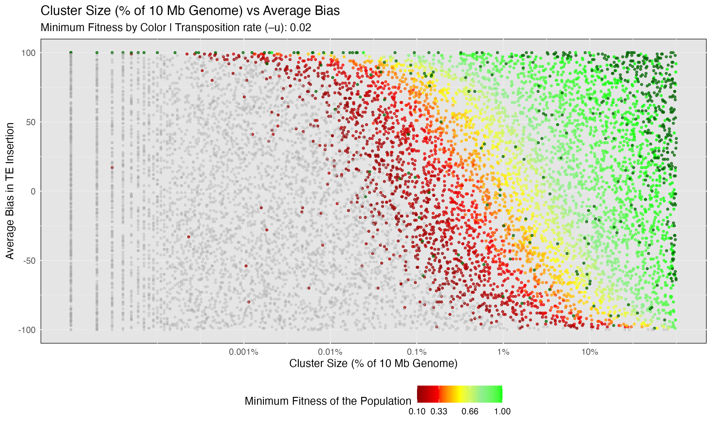
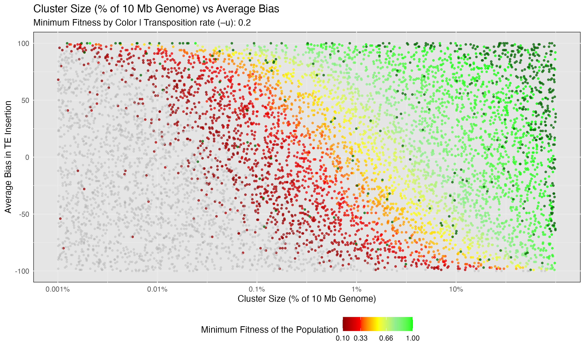

Minimum Fitness
Shashank Pritam
Introduction
In this simulation we explore the question - What is the impact of insertion bias on the minimum fitness of a population during the invasion of transposable elements (TEs)?
Materials & Methods
version: invadego0.1.3
Commands for the simulation
The simulations were generated using the code from:
Parameters
Simulations were ran with the following parameters:
- Number of simulations: 10000
- Number of threads: 4
- Number of replications (–rep): 1
- Transposition rate (–u): Variable
- Number of steps (–steps): 5000
- Population size (–N): 1000
- Number of generations (–gen): 5000
- Negative effect of a TE insertion (–x): 0.01
- Genome (–genome) mb:10,10,10,10,10
- Recombination Rate (–rr): 4,4,4,4,4
- Negative effect of a cluster insertions (-no-x-cluins, i.e, x=0)
- Silent mode: True
Random Clusters were Generated using this snippet:
Code
def get_rand_clusters():
lower_limit = 0 # Lower bound
upper_limit = math.log10(1e+7) # Upper bound
r = math.floor(10**random.uniform(lower_limit, upper_limit))
return f"{r},{r},{r},{r},{r}"Visualization in R
Set the environment by loading modules
Code
library(tidyverse)
library(ggplot2)
theme_set(theme_bw())Load Data
Code
load_data <- function(folder_path, u_value) {
column_names <- c("rep", "gen", "popstat", "spacer_1", "fwte", "avw", "min_w", "avtes", "avpopfreq", "fixed", "spacer_2", "phase", "fwcli", "avcli", "fixcli", "spacer_3", "avbias", "3tot", "3cluster", "spacer_4", "sampleid")
df <- read_delim(folder_path, delim='\t', col_names = column_names, show_col_types = FALSE)
numeric_columns <- c("rep", "gen", "fwte", "avw", "min_w", "avtes", "avpopfreq", "fixed", "fwcli", "avcli", "fixcli", "avbias", "sampleid")
df[numeric_columns] <- lapply(df[numeric_columns], as.numeric)
df_gen_not0 <- df %>% filter(gen != 0)
df_gen_0 <- df %>% filter(gen == 0)
#### Join dataframes
df_final <- left_join(df_gen_not0, df_gen_0, by = "rep", suffix = c("", "_from_gen0"))
columns_to_fill <- c("popstat", "avbias", "sampleid", "min_w")
for (col in columns_to_fill) {
df_final[[col]] <- ifelse(is.na(df_final[[col]]), df_final[[paste(col, "_from_gen0", sep = "")]], df_final[[col]])
}
#### Keep only the necessary columns
df_final <- select(df_final, rep, popstat, avbias, sampleid, min_w)
# Calculate sampleid_percent
df_final$sampleid_percent <- (df_final$sampleid / 10000000) * 100 ## At the time of writing this code the piRNA Cluster was generated in base pairs, now it is generated in kb. So to replicate this one should use 10000/1000 instead of 10000000 to divide.
# Filter out fail-0 and fail-w
df_filtered = df_final %>% filter(!popstat %in% c("fail-0", "fail-w"))
# Add a new column for transposition rate
df_final$u <- u_value
# Also add the 'u' column to df_filtered
df_filtered$u <- u_value
return(list(df_final = df_final, df_filtered = df_filtered))
}
# Load Data from Different Folders
df1 <- load_data('Simulation-Results_Files/simulation_storm/minfit/13thSep23at104054PM/combined.txt', 0.02)
df2 <- load_data('Simulation-Results_Files/simulation_storm/minfit/14thSep23at113630PM/combined.txt', 0.01)ggplot function to Plot Data
Code
plot_data <- function(df_list) {
df_final = df_list$df_final %>% filter(sampleid_percent > 0.001)
df_cluster_filtered = df_list$df_filtered %>% filter(sampleid_percent > 0.001)
breaks <- c(0.01, 0.1, 0.33, 0.66, 1)
colors <- c("darkred", "red", "yellow", "lightgreen", "green")
plot <- ggplot(df_cluster_filtered, aes(x = sampleid_percent, y = avbias, color = min_w)) +
geom_point(alpha = 0.7, size = 0.8) +
geom_point(data = df_final %>% filter(popstat == "fail-0"), aes(x = sampleid_percent, y = avbias), color = "darkgreen", alpha = 0.7, size = 0.8) +
geom_point(data = df_final %>% filter(popstat == "fail-w"), aes(x = sampleid_percent, y = avbias), color = "darkgrey", alpha = 0.3, size = 0.75) +
ylab("Average Bias in TE Insertion") +
xlab("Cluster Size (% of 10 Mb Genome)") +
labs(
title = "Cluster Size (% of 10 Mb Genome) vs Average Bias",
subtitle = paste("Minimum Fitness by Color | Transposition rate (–u):", unique(df_final$u))
) +
scale_color_gradientn(
name = "Minimum Fitness of the Population",
breaks = breaks,
colors = colors
) +
scale_x_log10(
breaks = c(0.001, 0.01, 0.1, 1, 10),
labels = c("0.001%", "0.01%", "0.1%", "1%", "10%")
) +
theme_minimal() +
theme(
legend.position = "bottom",
panel.background = element_rect(fill = "grey90")
)
return(plot)
}Create the plots
Code
# Save the final plot
plot1 <- plot_data(df1)
ggsave(filename = "images/minimum_fitness_u02.jpg", plot = plot1, width = 10, height = 6)
plot2 <- plot_data(df2)
ggsave(filename = "images/minimum_fitness_u01.jpg", plot = plot2, width = 10, height = 6) 
Color Scheme in the Plot
The color scheme used in the plot serves to represent different categories and values effectively:
Variable - min_w
For min_w, we have used a gradient of colors as follows:
- Dark Red (0.01): Represents \(min\_w < 0.01\)
- Red (0.1): Represents \(min\_w < 0.1\)
- Yellow (0.33): Represents \(min\_w < 0.33\)
- Green (1): Represents \(min\_w = 11\)
These colors visually guide the viewer through varying levels of fitness from lowest to highest.
Variables - popstat
Points where the popstat is either “fail-0” or “fail-w”. These are represented by:
- Dark Green (
fail-0): Indicates no TEs are left in the population. - Dark Grey (
fail-w): Indicates that population fitness is too low.
Conclusion
According to Kofler[2020], piRNA clusters require a minimum size to control transposable element invasions. These clusters may comprise up to 3% of the genome in small populations, especially with high transposition rates and recessive TE insertions. Here, we observe that the compensation for lower cluster size comes through increased insertion bias into the piRNA clusters. The population fitness increases with cluster size and average bias; negative bias results in extinction even with a large cluster size.
Another noticeable thing from the plot is that the change in transposition rate has little effect on population fitness if they have an appropriate cluster size with a strong enough bias.